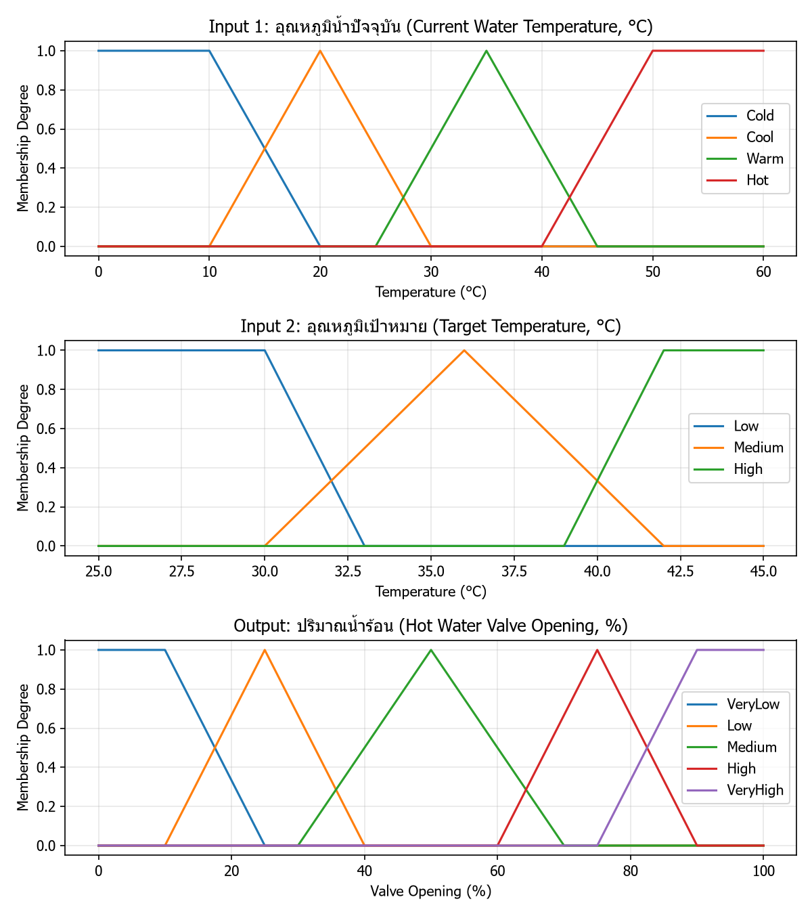
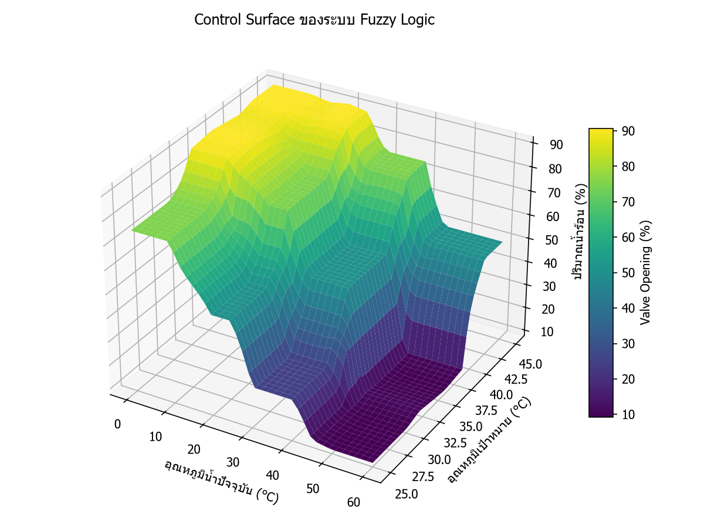
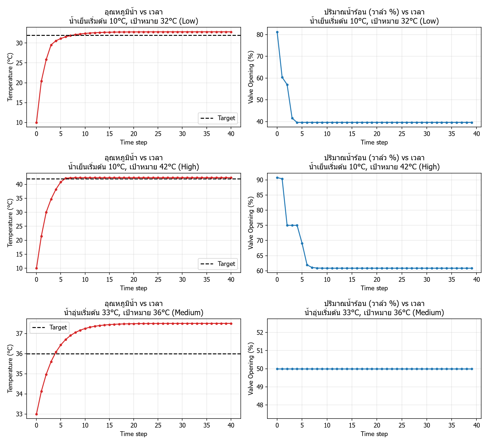

รายงานนี้นำเสนอระบบควบคุมอุณหภูมิน้ำอาบโดยใช้ตรรกศาสตร์คลุมเครือแบบ Mamdani เพื่อคำนวณเปอร์เซ็นต์การเปิดวาล์วน้ำร้อนจากอุณหภูมิน้ำปัจจุบันและอุณหภูมิเป้าหมาย ระบบใช้การอนุมานแบบ AND = min, implication และ aggregation = max และ defuzzification แบบ centroid จากนั้นทดสอบด้วยแบบจำลองก๊อกผสมน้ำร้อน/น้ำเย็น แบบ first-order ผลการทดลองทั้งสามกรณีแสดงว่าระบบปรับอุณหภูมิเข้าใกล้ค่าเป้าหมาย โดยมี steady-state error อยู่ในช่วง 0.383–1.500°C
อินพุตของระบบมี 2 ค่า ได้แก่ อุณหภูมิน้ำปัจจุบัน (0–60°C) และอุณหภูมิเป้าหมาย (25–45°C) ส่วนเอาต์พุตคือเปอร์เซ็นต์การเปิดวาล์วน้ำร้อน (0–100%). การประมวลผลประกอบด้วย 5 ขั้นตอน: fuzzification, rule evaluation, implication, aggregation และ centroid defuzzification.
อุณหภูมิปัจจุบันแบ่งเป็น Cold, Cool, Warm, Hot; อุณหภูมิเป้าหมายแบ่งเป็น Low, Medium, High; และวาล์วน้ำร้อนแบ่งเป็น VeryLow, Low, Medium, High, VeryHigh โดยใช้ฟังก์ชันสามเหลี่ยมและคางหมูเพื่อให้เกิดการเปลี่ยนผ่านที่ต่อเนื่อง

| ลำดับ | อุณหภูมิปัจจุบัน | เป้าหมาย | วาล์วน้ำร้อน |
|---|---|---|---|
| 1 | เย็น | ต่ำ | สูง |
| 2 | เย็น | ปานกลาง | สูงมาก |
| 3 | เย็น | สูง | สูงมาก |
| 4 | ค่อนข้างเย็น | ต่ำ | ปานกลาง |
| 5 | ค่อนข้างเย็น | ปานกลาง | สูง |
| 6 | ค่อนข้างเย็น | สูง | สูงมาก |
| 7 | อุ่น | ต่ำ | ต่ำ |
| 8 | อุ่น | ปานกลาง | ปานกลาง |
| 9 | อุ่น | สูง | สูง |
| 10 | ร้อน | ต่ำ | ต่ำมาก |
| 11 | ร้อน | ปานกลาง | ต่ำมาก |
| 12 | ร้อน | สูง | ปานกลาง |
ตัวอย่างเช่น ถ้าน้ำปัจจุบันอยู่ในกลุ่ม Cold และเป้าหมายอยู่ในกลุ่ม High ระบบจะเปิดวาล์ว VeryHigh เพื่อเร่งการเพิ่มอุณหภูมิ ขณะที่กรณี Hot และเป้าหมาย Low จะใช้ VeryLow เพื่อลดการเติมความร้อน

พื้นผิวควบคุมแสดงแนวโน้มเชิงเหตุผล: เมื่ออุณหภูมิปัจจุบันต่ำหรือเป้าหมายสูง เปอร์เซ็นต์วาล์วเพิ่มขึ้น และเมื่ออุณหภูมิปัจจุบันสูงกว่าเป้าหมาย วาล์วลดลง
จำลอง 40 time steps ต่อกรณี โดยวาล์วถูกคำนวณใหม่ทุก step จากอุณหภูมิที่วัดได้
| สภาวะเริ่มต้น | เป้าหมาย (°C) | ระดับ | อุณหภูมิสุดท้าย (°C) | error (°C) | วาล์วเริ่มต้น (%) | วาล์วสุดท้าย (%) |
|---|---|---|---|---|---|---|
| น้ำเย็นเริ่มต้น 10°C | 32 | ต่ำ | 32.82 | 0.823 | 81.25 | 39.61 |
| น้ำเย็นเริ่มต้น 10°C | 42 | สูง | 42.38 | 0.383 | 90.74 | 60.85 |
| น้ำอุ่นเริ่มต้น 33°C | 36 | ปานกลาง | 37.50 | 1.500 | 50.00 | 50.00 |

ระบบ Mamdani ที่พัฒนาสามารถแปลงข้อมูลอุณหภูมิแบบ crisp เป็นคำสั่งเปิดวาล์วน้ำร้อน อย่างต่อเนื่องและอธิบายได้ด้วยฐานกฎ 12 ข้อ ผลการจำลองยืนยันว่าระบบตอบสนองตามทิศทาง ที่ต้องการและเข้าใกล้อุณหภูมิเป้าหมายในทุกกรณี โดย error สูงสุด 1.500°C เหมาะสำหรับเป็นต้นแบบระบบควบคุมแบบ approximate reasoning
โปรแกรมฉบับเต็มที่ใช้สร้างผลการทดลองแสดงด้านล่าง สามารถรันด้วย
python simulate.py หลังติดตั้งแพ็กเกจจาก requirements.txt
# membership.py
# ------------------------------------------------------------------
# ฟังก์ชันสมาชิก (Membership Function) พื้นฐานที่ใช้ในระบบ Fuzzy Logic
# รองรับ 2 รูปแบบ:
# - Triangular (สามเหลี่ยม) ใช้พารามิเตอร์ [a, b, c]
# - Trapezoidal (คางหมู) ใช้พารามิเตอร์ [a, b, c, d]
# ------------------------------------------------------------------
import numpy as np # ใช้คำนวณตัวเลขและ Array
def trimf(x, params):
"""คำนวณค่าความเป็นสมาชิกของฟังก์ชันรูปสามเหลี่ยม."""
a, b, c = params # จุดเริ่ม จุดยอด และจุดสิ้นสุดของสามเหลี่ยม
x = np.asarray(x, dtype=float) # รองรับทั้งค่าเดียวและ NumPy Array
left = np.zeros_like(x) # เตรียมค่าด้านซ้าย
right = np.zeros_like(x) # เตรียมค่าด้านขวา
if b != a:
left = (x - a) / (b - a) # ความชันจาก 0 ที่ a ไป 1 ที่ b
else:
left = np.where(x >= a, 1.0, 0.0) # กรณีขอบซ้ายชนกัน
if c != b:
right = (c - x) / (c - b) # ความชันจาก 1 ที่ b ไป 0 ที่ c
else:
right = np.where(x <= c, 1.0, 0.0) # กรณีขอบขวาชนกัน
y = np.minimum(left, right) # ต้องผ่านทั้งด้านซ้ายและด้านขวา จึงใช้ค่าที่น้อยกว่า
y = np.clip(y, 0.0, 1.0) # Membership ต้องอยู่ระหว่าง 0 ถึง 1
return y
def trapmf(x, params):
"""คำนวณค่าความเป็นสมาชิกของฟังก์ชันรูปคางหมู."""
a, b, c, d = params # ขอบซ้าย ช่วงราบ และขอบขวาของคางหมู
x = np.asarray(x, dtype=float) # รองรับทั้งค่าเดียวและ NumPy Array
left = np.ones_like(x) # ค่าเริ่มต้นด้านซ้ายเป็น 1
right = np.ones_like(x) # ค่าเริ่มต้นด้านขวาเป็น 1
if b != a:
left = (x - a) / (b - a) # ความชันขึ้นจาก 0 ไป 1
if d != c:
right = (d - x) / (d - c) # ความชันลงจาก 1 ไป 0
y = np.minimum(np.minimum(left, right), 1.0) # รวมด้านซ้ายและด้านขวา
y = np.clip(y, 0.0, 1.0) # ป้องกันค่าเกินช่วงมาตรฐาน
return y
# fuzzy_controller.py
# ------------------------------------------------------------------
# ระบบควบคุมอุณหภูมิน้ำอาบด้วย Fuzzy Logic (Mamdani Inference System)
#
# Input 1 : อุณหภูมิน้ำปัจจุบัน (Current Water Temperature) หน่วย °C
# Input 2 : อุณหภูมิเป้าหมาย (Target Temperature) หน่วย °C
# Output : ปริมาณน้ำร้อนที่เปิด (Hot Water Valve Opening) หน่วย %
#
# ขั้นตอน Mamdani:
# 1) Fuzzification - แปลง input จากค่าตัวเลขเป็นค่าความเป็นสมาชิก
# 2) Rule Evaluation - หาความแรงของกฎ โดยใช้ AND = min
# 3) Implication - ตัดกราฟ output ตามความแรงของกฎ
# 4) Aggregation - รวมผลของทุกกฎด้วย OR = max
# 5) Defuzzification - แปลงผลกลับเป็นตัวเลขด้วย Centroid
# ------------------------------------------------------------------
import numpy as np # ใช้สร้างช่วงข้อมูลและคำนวณ Array
from membership import trimf, trapmf # นำเข้าฟังก์ชันสมาชิกของโปรเจกต์
class FuzzyBathController:
"""ตัวควบคุมที่รวม Membership Function, Rule Base และการอนุมาน."""
def __init__(self):
# Universe คือช่วงค่าที่ระบบยอมรับและใช้คำนวณ Fuzzy Set
self.now_universe = np.linspace(0, 60, 601) # อุณหภูมิปัจจุบัน 0-60°C
self.target_universe = np.linspace(25, 45, 401) # เป้าหมาย 25-45°C
self.valve_universe = np.linspace(0, 100, 1001) # วาล์ว 0-100%
# Input 1: แบ่งอุณหภูมิปัจจุบันเป็น Cold, Cool, Warm และ Hot
self.now_mf = {
"Cold": lambda x: trapmf(x, [0, 0, 10, 20]), # น้ำเย็นมาก
"Cool": lambda x: trimf(x, [10, 20, 30]), # น้ำค่อนข้างเย็น
"Warm": lambda x: trimf(x, [25, 35, 45]), # น้ำอุ่น
"Hot": lambda x: trapmf(x, [40, 50, 60, 60]), # น้ำร้อนมาก
}
# Input 2: แบ่งอุณหภูมิเป้าหมายเป็น Low, Medium และ High
self.target_mf = {
"Low": lambda x: trapmf(x, [25, 25, 30, 33]), # เป้าหมายต่ำ
"Medium": lambda x: trimf(x, [30, 36, 42]), # เป้าหมายปานกลาง
"High": lambda x: trapmf(x, [39, 42, 45, 45]), # เป้าหมายสูง
}
# Output: แบ่งเปอร์เซ็นต์การเปิดวาล์วเป็น 5 ระดับ
self.valve_mf = {
"VeryLow": lambda x: trapmf(x, [0, 0, 10, 25]), # เปิดน้อยมาก
"Low": lambda x: trimf(x, [10, 25, 40]), # เปิดน้อย
"Medium": lambda x: trimf(x, [30, 50, 70]), # เปิดปานกลาง
"High": lambda x: trimf(x, [60, 75, 90]), # เปิดมาก
"VeryHigh": lambda x: trapmf(x, [75, 90, 100, 100]), # เปิดมากที่สุด
}
# Rule Base: (อุณหภูมิปัจจุบัน, เป้าหมาย, ผลลัพธ์วาล์ว)
self.rules = [
("Cold", "Low", "High"), # น้ำเย็นและเป้าหมายต่ำ
("Cold", "Medium", "VeryHigh"), # น้ำเย็นและเป้าหมายปานกลาง
("Cold", "High", "VeryHigh"), # น้ำเย็นและเป้าหมายสูง
("Cool", "Low", "Medium"), # น้ำค่อนข้างเย็นและเป้าหมายต่ำ
("Cool", "Medium", "High"), # น้ำค่อนข้างเย็นและเป้าหมายปานกลาง
("Cool", "High", "VeryHigh"), # น้ำค่อนข้างเย็นและเป้าหมายสูง
("Warm", "Low", "Low"), # น้ำอุ่นและเป้าหมายต่ำ
("Warm", "Medium", "Medium"), # น้ำอุ่นและเป้าหมายปานกลาง
("Warm", "High", "High"), # น้ำอุ่นและเป้าหมายสูง
("Hot", "Low", "VeryLow"), # น้ำร้อนและเป้าหมายต่ำ
("Hot", "Medium", "VeryLow"), # น้ำร้อนและเป้าหมายปานกลาง
("Hot", "High", "Medium"), # น้ำร้อนและเป้าหมายสูง
]
def fuzzify_now(self, t_now):
"""คำนวณระดับความเป็นสมาชิกของอุณหภูมิปัจจุบัน."""
return {name: float(mf(t_now)) for name, mf in self.now_mf.items()} # คำนวณทุกกลุ่ม
def fuzzify_target(self, t_target):
"""คำนวณระดับความเป็นสมาชิกของอุณหภูมิเป้าหมาย."""
return {name: float(mf(t_target)) for name, mf in self.target_mf.items()} # คำนวณทุกกลุ่ม
def infer(self, t_now, t_target):
"""ทำ Fuzzification, Rule Evaluation, Implication และ Aggregation."""
now_degrees = self.fuzzify_now(t_now) # แปลง input ปัจจุบันเป็น Fuzzy Values
target_degrees = self.fuzzify_target(t_target) # แปลงเป้าหมายเป็น Fuzzy Values
aggregated = np.zeros_like(self.valve_universe) # เริ่ม output รวมเป็นศูนย์
fired_rules = [] # เก็บกฎที่ถูกกระตุ้นเพื่อแสดงผล
for now_term, target_term, valve_term in self.rules: # ตรวจสอบกฎทีละข้อ
firing_strength = min(now_degrees[now_term], target_degrees[target_term]) # AND = min
if firing_strength > 0: # เก็บเฉพาะกฎที่มีผลจริง
fired_rules.append((now_term, target_term, valve_term, firing_strength))
consequent_mf = self.valve_mf[valve_term](self.valve_universe) # กราฟ output ของกฎ
clipped = np.minimum(consequent_mf, firing_strength) # Implication: ตัดยอดกราฟ
aggregated = np.maximum(aggregated, clipped) # Aggregation: รวมด้วย max
return aggregated, fired_rules, now_degrees, target_degrees # ส่งผลไป Defuzzification
def defuzzify(self, aggregated):
"""แปลง Fuzzy Output เป็นเปอร์เซ็นต์วาล์วด้วย Centroid."""
area = np.sum(aggregated) # พื้นที่โดยประมาณใต้กราฟ output
if area == 0: # ป้องกันการหารด้วยศูนย์กรณีไม่มีกฎทำงาน
return float(np.mean(self.valve_universe)) # ใช้ค่ากึ่งกลาง 50% เป็น fallback
centroid = np.sum(self.valve_universe * aggregated) / area # สูตรจุดศูนย์ถ่วง
return float(centroid) # คืนค่าเป็น float ปกติ
def compute(self, t_now, t_target):
"""เรียกกระบวนการควบคุมทั้งหมดและคืนค่า output."""
t_now = float(np.clip(t_now, self.now_universe[0], self.now_universe[-1])) # จำกัด input ปัจจุบัน
t_target = float(np.clip(t_target, self.target_universe[0], self.target_universe[-1])) # จำกัดเป้าหมาย
aggregated, fired_rules, now_degrees, target_degrees = self.infer(t_now, t_target) # อนุมาน
valve_opening = self.defuzzify(aggregated) # แปลงผลเป็นเปอร์เซ็นต์วาล์ว
return valve_opening, aggregated, fired_rules, now_degrees, target_degrees # คืนผลทั้งหมด
# simulate.py
# ------------------------------------------------------------------
# โปรแกรมจำลองการทำงานของระบบควบคุมอุณหภูมิน้ำอาบด้วย Fuzzy Logic
# (Mamdani Fuzzy Inference System)
#
# โปรแกรมนี้จะ
# 1) วาดกราฟ Membership Function ของ input และ output
# 2) วาด Control Surface ความสัมพันธ์ระหว่าง input กับ output
# 3) จำลองการเปลี่ยนอุณหภูมิตามเวลาในหลายสถานการณ์
# 4) พิมพ์รายละเอียด Fuzzification และกฎที่ถูกกระตุ้น
#
# ผลลัพธ์ทุกกราฟจะถูกบันทึกไว้ในโฟลเดอร์ outputs/
# ------------------------------------------------------------------
import os # ใช้สร้างโฟลเดอร์ผลลัพธ์
import matplotlib.pyplot as plt # ใช้วาดกราฟ
import numpy as np # ใช้จัดการข้อมูลตัวเลขและช่วงเวลา
from mpl_toolkits.mplot3d import Axes3D # noqa: F401 (เปิดใช้งานกราฟ 3D)
from fuzzy_controller import FuzzyBathController # นำเข้าตัวควบคุม Fuzzy
OUT_DIR = "outputs" # โฟลเดอร์สำหรับเก็บรูปผลลัพธ์
plt.rcParams["font.family"] = "Tahoma" # ฟอนต์ที่รองรับภาษาไทยบน Windows
plt.rcParams["axes.unicode_minus"] = False # แก้ปัญหาเครื่องหมายลบในกราฟ
def plot_membership_functions(fc: FuzzyBathController):
"""วาด Membership Function ของ input และ output ทั้งหมด."""
fig, axes = plt.subplots(3, 1, figsize=(8, 9)) # สร้างกราฟ 3 แถว
for name, mf in fc.now_mf.items(): # วนผ่านกลุ่มอุณหภูมิปัจจุบัน
axes[0].plot(fc.now_universe, mf(fc.now_universe), label=name) # วาดเส้นกลุ่มนั้น
axes[0].set_title("Input 1: อุณหภูมิน้ำปัจจุบัน (Current Water Temperature, °C)")
axes[0].set_xlabel("Temperature (°C)") # ชื่อแกนนอน
axes[0].set_ylabel("Membership Degree") # ชื่อแกนตั้ง
axes[0].legend() # แสดงชื่อเส้น
axes[0].grid(alpha=0.3) # แสดงเส้นตารางจาง ๆ
for name, mf in fc.target_mf.items(): # วนผ่านกลุ่มอุณหภูมิเป้าหมาย
axes[1].plot(fc.target_universe, mf(fc.target_universe), label=name) # วาดเส้นกลุ่มนั้น
axes[1].set_title("Input 2: อุณหภูมิเป้าหมาย (Target Temperature, °C)")
axes[1].set_xlabel("Temperature (°C)") # ชื่อแกนนอน
axes[1].set_ylabel("Membership Degree") # ชื่อแกนตั้ง
axes[1].legend() # แสดงชื่อเส้น
axes[1].grid(alpha=0.3) # แสดงเส้นตาราง
for name, mf in fc.valve_mf.items(): # วนผ่านกลุ่มเปอร์เซ็นต์วาล์ว
axes[2].plot(fc.valve_universe, mf(fc.valve_universe), label=name) # วาดเส้นกลุ่มนั้น
axes[2].set_title("Output: ปริมาณน้ำร้อน (Hot Water Valve Opening, %)")
axes[2].set_xlabel("Valve Opening (%)") # ชื่อแกนนอน
axes[2].set_ylabel("Membership Degree") # ชื่อแกนตั้ง
axes[2].legend() # แสดงชื่อเส้น
axes[2].grid(alpha=0.3) # แสดงเส้นตาราง
fig.tight_layout() # จัดระยะห่างของกราฟ
fig.savefig(f"{OUT_DIR}/1_membership_functions.png", dpi=150) # บันทึกกราฟ
plt.close(fig) # ปิดกราฟและคืนหน่วยความจำ
def plot_control_surface(fc: FuzzyBathController):
"""วาด Control Surface แบบสามมิติของระบบ."""
now_range = np.linspace(fc.now_universe[0], fc.now_universe[-1], 40) # ตัวอย่าง current temp
target_range = np.linspace(fc.target_universe[0], fc.target_universe[-1], 40) # ตัวอย่าง target
NOW, TARGET = np.meshgrid(now_range, target_range) # สร้างคู่ input ทุกคู่
VALVE = np.zeros_like(NOW) # เตรียมตารางเก็บ output
for i in range(NOW.shape[0]): # วนทุกแถวของตาราง
for j in range(NOW.shape[1]): # วนทุกคอลัมน์ของตาราง
valve_opening, *_ = fc.compute(NOW[i, j], TARGET[i, j]) # คำนวณวาล์ว
VALVE[i, j] = valve_opening # เก็บ output ลงตำแหน่งเดียวกัน
fig = plt.figure(figsize=(8, 6)) # สร้างพื้นที่กราฟ
ax = fig.add_subplot(111, projection="3d") # เพิ่มแกนสามมิติ
surf = ax.plot_surface(NOW, TARGET, VALVE, cmap="viridis", edgecolor="none") # วาดพื้นผิว
ax.set_xlabel("อุณหภูมิน้ำปัจจุบัน (°C)") # ชื่อแกน X
ax.set_ylabel("อุณหภูมิเป้าหมาย (°C)") # ชื่อแกน Y
ax.set_zlabel("ปริมาณน้ำร้อน (%)") # ชื่อแกน Z
ax.set_title("Control Surface ของระบบ Fuzzy Logic") # ชื่อกราฟ
fig.colorbar(surf, shrink=0.6, aspect=12, label="Valve Opening (%)") # แถบสี
fig.tight_layout() # จัดรูปแบบกราฟ
fig.savefig(f"{OUT_DIR}/2_control_surface.png", dpi=150) # บันทึกกราฟ
plt.close(fig) # ปิดกราฟ
def simulate_scenario(fc: FuzzyBathController, t_now_init, t_target,
t_hot=60.0, t_cold=15.0, k=0.25, steps=40):
"""จำลองการผสมน้ำแบบ First-order ตามจำนวน time step."""
t_now = t_now_init # อุณหภูมิเริ่มต้นในอ่าง
temps = [t_now] # เก็บอุณหภูมิ รวมค่าเริ่มต้น
valves = [] # เก็บค่าเปิดวาล์วของแต่ละรอบ
for _ in range(steps): # ทำซ้ำตามจำนวนรอบ
valve_opening, *_ = fc.compute(t_now, t_target) # ให้ Fuzzy คำนวณวาล์ว
valves.append(valve_opening) # บันทึกค่าเปิดวาล์ว
t_mix_in = t_cold + (valve_opening / 100.0) * (t_hot - t_cold) # อุณหภูมิน้ำผสมเข้า
t_now = t_now + k * (t_mix_in - t_now) # อัปเดตอุณหภูมิแบบ First-order
temps.append(t_now) # บันทึกอุณหภูมิใหม่
return np.array(temps), np.array(valves) # คืนผลเป็น NumPy Array
def plot_simulation_scenarios(fc: FuzzyBathController):
"""จำลอง 3 สถานการณ์และวาดอุณหภูมิกับวาล์วเทียบเวลา."""
scenarios = [ # เลือกกรณีทดสอบให้ครอบคลุมหลายระดับ
{"label": "น้ำเย็นเริ่มต้น 10°C, เป้าหมาย 32°C (Low)", "t_now": 10, "t_target": 32},
{"label": "น้ำเย็นเริ่มต้น 10°C, เป้าหมาย 42°C (High)", "t_now": 10, "t_target": 42},
{"label": "น้ำอุ่นเริ่มต้น 33°C, เป้าหมาย 36°C (Medium)", "t_now": 33, "t_target": 36},
]
fig, axes = plt.subplots(len(scenarios), 2, figsize=(11, 10)) # กราฟ 3 แถว 2 คอลัมน์
for row, sc in enumerate(scenarios): # วนทีละสถานการณ์
temps, valves = simulate_scenario(fc, sc["t_now"], sc["t_target"]) # รัน simulation
t_axis_temp = np.arange(len(temps)) # แกนเวลาของอุณหภูมิ
t_axis_valve = np.arange(len(valves)) # แกนเวลาของวาล์ว
axes[row, 0].plot(t_axis_temp, temps, color="tab:red", marker="o", markersize=3) # อุณหภูมิ
axes[row, 0].axhline(sc["t_target"], color="black", linestyle="--", label="Target") # เป้าหมาย
axes[row, 0].set_title(f"อุณหภูมิน้ำ vs เวลา\n{sc['label']}") # ชื่อกราฟ
axes[row, 0].set_xlabel("Time step") # ชื่อแกนนอน
axes[row, 0].set_ylabel("Temperature (°C)") # ชื่อแกนตั้ง
axes[row, 0].legend() # แสดงคำอธิบาย
axes[row, 0].grid(alpha=0.3) # แสดงตาราง
axes[row, 1].plot(t_axis_valve, valves, color="tab:blue", marker="o", markersize=3) # วาล์ว
axes[row, 1].set_title(f"ปริมาณน้ำร้อน (วาล์ว %) vs เวลา\n{sc['label']}") # ชื่อกราฟ
axes[row, 1].set_xlabel("Time step") # ชื่อแกนนอน
axes[row, 1].set_ylabel("Valve Opening (%)") # ชื่อแกนตั้ง
axes[row, 1].grid(alpha=0.3) # แสดงตาราง
final_temp = temps[-1] # อ่านอุณหภูมิสุดท้าย
error = abs(sc["t_target"] - final_temp) # คำนวณ error แบบค่าสัมบูรณ์
print(f"[Scenario] {sc['label']}") # แสดงชื่อกรณีใน console
print(f" -> อุณหภูมิสุดท้ายหลัง {len(temps)-1} step = {final_temp:.2f} °C "
f"(ค่าคลาดเคลื่อนจากเป้าหมาย = {error:.3f} °C)") # แสดงผลวิเคราะห์
fig.tight_layout() # จัดระยะห่าง
fig.savefig(f"{OUT_DIR}/3_time_simulation.png", dpi=150) # บันทึกกราฟ
plt.close(fig) # ปิดกราฟ
def print_example_inference(fc: FuzzyBathController, t_now, t_target):
"""พิมพ์รายละเอียด Fuzzification และกฎของตัวอย่าง."""
valve_opening, _, fired_rules, now_deg, target_deg = fc.compute(t_now, t_target) # เรียก Fuzzy
print("=" * 60) # เส้นคั่น
print(f"ตัวอย่างการคำนวณ: T_now = {t_now} °C, T_target = {t_target} °C") # แสดง input
print("-" * 60) # เส้นคั่นย่อย
print("ค่าความเป็นสมาชิกของ Input 1 (อุณหภูมิน้ำปัจจุบัน):") # หัวข้อ
for k, v in now_deg.items(): # วนค่าของ current temperature
print(f" {k:8s} = {v:.3f}") # แสดง membership
print("ค่าความเป็นสมาชิกของ Input 2 (อุณหภูมิเป้าหมาย):") # หัวข้อ
for k, v in target_deg.items(): # วนค่าของ target temperature
print(f" {k:8s} = {v:.3f}") # แสดง membership
print("กฎที่ถูกกระตุ้น (Firing strength > 0):") # หัวข้อกฎ
for now_term, target_term, valve_term, strength in fired_rules: # วนกฎที่ทำงาน
print(f" IF now={now_term:5s} AND target={target_term:6s} "
f"THEN valve={valve_term:8s} (firing strength = {strength:.3f})") # แสดงกฎ
print(f"ผลลัพธ์หลัง Defuzzification (Centroid): ปริมาณน้ำร้อน = {valve_opening:.2f} %") # output
print("=" * 60) # ปิดส่วนแสดงผล
if __name__ == "__main__":
os.makedirs(OUT_DIR, exist_ok=True) # สร้างโฟลเดอร์ output ถ้ายังไม่มี
fc = FuzzyBathController() # สร้างตัวควบคุม
print("กำลังวาดกราฟฟังก์ชันสมาชิก (membership functions) ...") # แจ้งสถานะ
plot_membership_functions(fc) # สร้างกราฟ Membership
print("กำลังวาด control surface ...") # แจ้งสถานะ
plot_control_surface(fc) # สร้างกราฟ Control Surface
print("กำลังจำลองการทำงานของระบบตามเวลา (time-domain simulation) ...") # แจ้งสถานะ
plot_simulation_scenarios(fc) # สร้างกราฟ simulation
print() # เว้นบรรทัด
print_example_inference(fc, t_now=15, t_target=40) # แสดงตัวอย่าง inference
print() # เว้นบรรทัด
print(f"บันทึกกราฟทั้งหมดไว้ในโฟลเดอร์ '{OUT_DIR}/' เรียบร้อยแล้ว") # แจ้งผลสำเร็จ